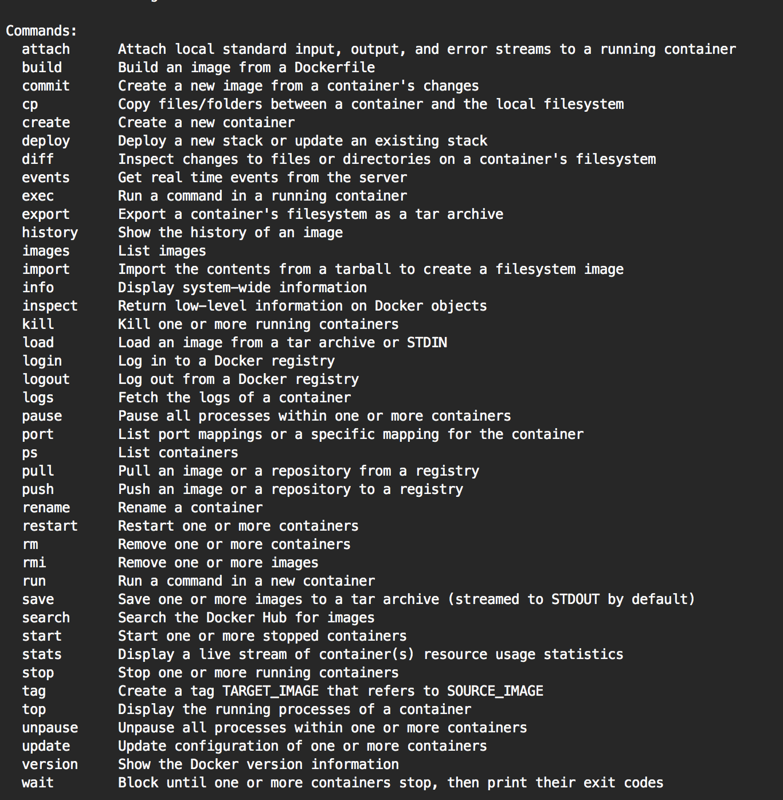

02 Docker 命令行实践
Docker 官方为了让用户快速上手，提供了一个交互式教程，旨在帮助用户掌握 Docker 命令行的使用方法。但是由于 Docker 技术的快速发展，此交互式教程已经无法满足用户的实际使用需求，所以让我们一起开始一次真正的命令行学习之旅。
首先，Docker 的命令清单可以通过运行 docker ，或者 docker help 命令得到： $ sudo docker。

在 Docker 容器技术不断演化的过程中，Docker 的子命令已经达到41个之多，其中核心子命令（例如：run）还会有复杂的参数配置。笔者通过结合功能和应用场景方面的考虑，把命令行划分为4个部分，方便我们快速概览 Docker 命令行的组成结构：
| 功能划分 | 命令 |
|---|---|
| 环境信息相关 | 1. info 2. version |
| 系统运维相关 | 1. attach 2. build 3. commit 4. cp 5. diff 6. images 7. export/ import / save / load 8. inspect 9. kill 10. port 11. pause / unpause 12. ps 13. rm 14. rmi 15. run 16. start / stop / restart 17. tag 18. top 19.wait 20. rename 21.stats 22. update 23. exec 24.deploy 25.create |
| 日志信息相关 | 1. events 2. history 3. logs |
| Docker Hub服务相关 | 1. login/ logout 2. pull / push 3. search |
参数约定
单个字符的参数可以放在一起组合配置，例如：
docker run -t -i --name test busybox sh
可以用这样的方式等同：
docker run -ti --name test busybox sh
布尔值约定
Boolean 参数形式如：-d=false。注意，当你声明这个 Boolean 参数时，比如 docker run -d=true，它将直接把启动的 Container 挂起放在后台运行。
字符串和数字
参数如 –name=“” 定义一个字符串，它仅能被定义一次。同类型的如-c=0 定义一个数字，它也只能被定义一次。
后台进程
Docker 后台进程是一个常驻后台的系统进程，目前已经从 Docker 程序分离处理一份独立的程序 dockerd 来执行守护后台进程。这个后台进程是用来启动容器引擎的，使用 dockerd –help 可以得到更详细的功能参数配置。如下图：
Usage: dockerd COMMAND
A self-sufficient runtime for containers.
Options:
--add-runtime runtime Register an additional OCI compatible runtime (default [])
--allow-nondistributable-artifacts list Push nondistributable artifacts to specified registries (default [])
--api-cors-header string Set CORS headers in the Engine API
--authorization-plugin list Authorization plugins to load (default [])
--bip string Specify network bridge IP
-b, --bridge string Attach containers to a network bridge
--cgroup-parent string Set parent cgroup for all containers
--cluster-advertise string Address or interface name to advertise
--cluster-store string URL of the distributed storage backend
--cluster-store-opt map Set cluster store options (default map[])
--config-file string Daemon configuration file (default "/etc/docker/daemon.json")
--containerd string Path to containerd socket
--cpu-rt-period int Limit the CPU real-time period in microseconds
--cpu-rt-runtime int Limit the CPU real-time runtime in microseconds
--data-root string Root directory of persistent Docker state (default "/var/lib/docker")
-D, --debug Enable debug mode
--default-gateway ip Container default gateway IPv4 address
--default-gateway-v6 ip Container default gateway IPv6 address
--default-runtime string Default OCI runtime for containers (default "runc")
--default-ulimit ulimit Default ulimits for containers (default [])
--disable-legacy-registry Disable contacting legacy registries (default true)
--dns list DNS server to use (default [])
--dns-opt list DNS options to use (default [])
--dns-search list DNS search domains to use (default [])
--exec-opt list Runtime execution options (default [])
--exec-root string Root directory for execution state files (default "/var/run/docker")
--experimental Enable experimental features
--fixed-cidr string IPv4 subnet for fixed IPs
--fixed-cidr-v6 string IPv6 subnet for fixed IPs
-G, --group string Group for the unix socket (default "docker")
--help Print usage
-H, --host list Daemon socket(s) to connect to (default [])
--icc Enable inter-container communication (default true)
--init Run an init in the container to forward signals and reap processes
--init-path string Path to the docker-init binary
--insecure-registry list Enable insecure registry communication (default [])
--ip ip Default IP when binding container ports (default 0.0.0.0)
--ip-forward Enable net.ipv4.ip_forward (default true)
--ip-masq Enable IP masquerading (default true)
--iptables Enable addition of iptables rules (default true)
--ipv6 Enable IPv6 networking
--label list Set key=value labels to the daemon (default [])
--live-restore Enable live restore of docker when containers are still running
--log-driver string Default driver for container logs (default "json-file")
-l, --log-level string Set the logging level ("debug", "info", "warn", "error", "fatal") (default "info")
--log-opt map Default log driver options for containers (default map[])
--max-concurrent-downloads int Set the max concurrent downloads for each pull (default 3)
--max-concurrent-uploads int Set the max concurrent uploads for each push (default 5)
--metrics-addr string Set default address and port to serve the metrics api on
--mtu int Set the containers network MTU
--no-new-privileges Set no-new-privileges by default for new containers
--oom-score-adjust int Set the oom_score_adj for the daemon (default -500)
-p, --pidfile string Path to use for daemon PID file (default "/var/run/docker.pid")
--raw-logs Full timestamps without ANSI coloring
--registry-mirror list Preferred Docker registry mirror (default [])
--seccomp-profile string Path to seccomp profile
--selinux-enabled Enable selinux support
--shutdown-timeout int Set the default shutdown timeout (default 15)
-s, --storage-driver string Storage driver to use
--storage-opt list Storage driver options (default [])
--swarm-default-advertise-addr string Set default address or interface for swarm advertised address
--tls Use TLS; implied by --tlsverify
--tlscacert string Trust certs signed only by this CA (default "~/.docker/ca.pem")
--tlscert string Path to TLS certificate file (default "~/.docker/cert.pem")
--tlskey string Path to TLS key file (default ~/.docker/key.pem")
--tlsverify Use TLS and verify the remote
--userland-proxy Use userland proxy for loopback traffic (default true)
--userland-proxy-path string Path to the userland proxy binary
--userns-remap string User/Group setting for user namespaces
-v, --version Print version information and qui
Docker 后台进程参数清单如下表：
| 参数 | 解释 |
|---|---|
| –add-runtime runtime | 选择容器运行时引擎，默认 containerd |
| –allow-nondistributable-artifacts list | 因为类如 window base image 包含版权限制，所以配置指定的私有镜像仓库，可以帮助应用正常发布 |
| –api-cors-header string | 提供跨站 API 请求自定义包头信息 |
| –authorization-plugin list | 认证插件配置 |
| –bip string | 配置网桥地址 |
| -b, –bridge string | 连接网桥 |
| –cgroup-parent string | 配置容器的父 cgroup 信息 |
| –cluster-advertise string | 集群广播网络地址 |
| –cluster-store string | 集群存储支持 |
| –cluster-store-opt map | 集群存储参数配置 |
| –config-file string | 后台引擎参数配置文件 |
| –containerd string | 容器引擎实例网络套接字路径 |
| –cpu-rt-period int | 限制 CPU 间隔频率（微秒级别） |
| –cpu-rt-runtime int | 限制 CPU 运行时频率（微秒级别） |
| –data-root string | 容器引擎数据根目录地址 |
| -D, –debug | 调试信息 |
| –default-gateway ip | 容器默认 IPv4 网络网关 |
| –default-gateway-v6 ip | 容器默认 IPv6 网络网关 |
| –default-runtime string | 容器运行时，默认 runc |
| –default-ulimit ulimit | 配置容器默认最大文件限制数，改善运行性能 |
| –disable-legacy-registry | 废弃老版本镜像仓库 |
| –dns list | DNS 服务地址 |
| –dns-opt list | DNS 服务参数 |
| –dns-search list | DNS服务查询域名配置 |
| –exec-opt list | 运行时执行参数 |
| –exec-root string | 运行时执行根目录地址 |
| –experimental | 启用实验性特性 |
| –fixed-cidr string | 固定 IPv4 网段 |
| –fixed-cidr-v6 string | 固定 IPv6 网段 |
| -G, –group string | 网络套接字所属组 |
| –help | 帮助信息 |
| -H, –host list | 后台进程连接地址 |
| –icc | 启用容器间的网络互联，默认启用 |
| –init | 在容器运行时启动一个 init 程序，来统一管理进程 |
| –init-path string | docker init 的路径地址 |
| –insecure-registry list | 非安全镜像仓库地址列表 |
| –ip ip | 默认容器绑定 IP 地址，默认 0.0.0.0 |
| –ip-forward | 启动 net.ipv4.ip_forward |
| –ip-masq | 启动IP混淆 |
| –iptables | 启动默认的iptable规则 |
| –ipv6 | 启动 IPv6 网络 |
| –label list | 配置键值对参数到引擎后台 |
| –live-restore | 启用容器热迁移特性 |
| –log-driver string | 日志驱动配置，默认 json-file |
| -l, –log-level string | 日志级别 |
| –log-opt map | 日志驱动参数 |
| –max-concurrent-downloads int | 每次 pull 的最大下载线程数 |
| –max-concurrent-uploads int | 每次 push 最大上传线程数 |
| –metrics-addr string | 监控地址 |
| –mtu int | 网络数据包 MTU 配置 |
| –no-new-privileges | 去掉 no*new*privs 权限 |
| –oom-score-adjust int | OOM 阈值配置 |
| -p, –pidfile string | 引擎后台进程文件地址 |
| –raw-logs | 无 ANSI 颜色的日志 |
| –registry-mirror list | 镜像仓库同步镜像地址 |
| –seccomp-profile string | seccomp 文件地址 |
| –selinux-enabled | 启用 selinux |
| –shutdown-timeout int | 默认停机超时时间，默认15 秒 |
| -s, –storage-driver string | 容器存储驱动 |
| –storage-opt list | 容器存储驱动参数 |
| –swarm-default-advertise-addr string | swarm 集群广播地址 |
| –tls | 使用 TLS 认证 |
| –tlscacert string | CA 文件地址 |
| –tlscert string | TLS 认证文件地址 |
| –tlskey string | TLS 私钥地址 |
| –tlsverify | 使用 TLS 认证 |
| –userland-proxy | 使用用户态 proxy 来路由 loopback 流量 |
| –userland-proxy-path string | 用户态 proxy 地址 |
| –userns-remap string | 用户命令空间的用户、用户组配置 |
| -v, –version | 版本 |
Docker 命令行探秘
环境信息相关
info
使用方法：docker info
例子：
[fedora@docker-devel-cli docker]$ sudo docker -D info
Containers: 0
Images: 32
Storage Driver: devicemapper
Pool Name: docker-252:1-130159-pool
Data file: /var/lib/docker/devicemapper/devicemapper/data
Metadata file: /var/lib/docker/devicemapper/devicemapper/metadata
Data Space Used: 1616.9 Mb
Data Space Total: 102400.0 Mb
Metadata Space Used: 2.4 Mb
Metadata Space Total: 2048.0 Mb
Execution Driver: native-0.2
Kernel Version: 3.11.10-301.fc20.x86_64
Debug mode (server): false
Debug mode (client): true
Fds: 11
Goroutines: 14
EventsListeners: 0
Init SHA1: 2c5adb59737b8a01fa3fb968519a43fe140bc9c9
Init Path: /usr/libexec/docker/dockerinit
Sockets: [fd://]
使用说明：
这个命令在开发者报告 Bug 时会非常有用，结合 docker vesion 一起，可以随时使用这个命令把本地的配置信息提供出来，方便 Docker 的开发者快速定位问题。
version
使用方法：docker version
使用说明：
显示 Docker 的版本号，API 版本号，Git commit，Docker 客户端和后台进程的 Go 版本号。
系统运维相关
attach
使用方法：docker attach [OPTIONS] CONTAINER
例子：
$ ID=$(sudo docker run -d ubuntu /usr/bin/top -b)
$ sudo docker attach $ID
top - 17:21:49 up 5:53, 0 users, load average: 0.63, 1.15, 0.78
Tasks: 1 total, 1 running, 0 sleeping, 0 stopped, 0 zombie
%Cpu(s): 1.0 us, 0.7 sy, 0.0 ni, 97.7 id, 0.7 wa, 0.0 hi, 0.0 si, 0.0 st
KiB Mem: 2051644 total, 723700 used, 1327944 free, 33032 buffers
KiB Swap: 0 total, 0 used, 0 free. 565836 cached Mem
PID USER PR NI VIRT RES SHR S %CPU %MEM TIME+ COMMAND
1 root 20 0 19748 1280 1008 R 0.0 0.1 0:00.04 top
$ sudo docker stop $ID
使用说明：
使用这个命令可以挂载正在后台运行的容器，在开发应用的过程中运用这个命令可以随时观察容器內进程的运行状况。开发者在开发应用的场景中，这个命令是一个非常有用的命令。
build
使用方法：docker build [OPTIONS] PATH | URL | -
例子：
$ docker build .
Uploading context 18.829 MB
Uploading context
Step 0 : FROM busybox
---> 769b9341d937
Step 1 : CMD echo Hello world
---> Using cache
---> 99cc1ad10469
Successfully built 99cc1ad10469
使用说明：
这个命令是从源码构建新 Image 的命令。因为 Image 是分层的，最关键的 Base Image 是如何构建的是用户比较关心的，Docker 官方文档给出了构建方法，请参考这里。
commit
使用方法：docker commit [OPTIONS] CONTAINER [REPOSITORY[:TAG]]
例子：
$ sudo docker ps
ID IMAGE COMMAND CREATED STATUS PORTS
c3f279d17e0a ubuntu:12.04 /bin/bash 7 days ago Up 25 hours
197387f1b436 ubuntu:12.04 /bin/bash 7 days ago Up 25 hours
$ docker commit c3f279d17e0a SvenDowideit/testimage:version3
f5283438590d
$ docker images | head
REPOSITORY TAG ID CREATED VIRTUAL SIZE
SvenDowideit/testimage version3 f5283438590d 16 seconds ago 335.7 MB
使用说明：
这个命令的用处在于把有修改的 container 提交成新的 Image，然后导出此 Imange 分发给其他场景中调试使用。Docker 官方的建议是，当你在调试完 Image 的问题后，应该写一个新的 Dockerfile 文件来维护此 Image。commit 命令仅是一个临时创建 Imange 的辅助命令。
cp
使用方法： cp CONTAINER:PATH HOSTPATH
使用说明：
使用 cp 可以把容器內的文件复制到 Host 主机上。这个命令在开发者开发应用的场景下，会需要把运行程序产生的结果复制出来的需求，在这个情况下就可以使用这个 cp 命令。
diff
使用方法：docker diff CONTAINER
例子：
$ sudo docker diff 7bb0e258aefe
C /dev
A /dev/kmsg
C /etc
A /etc/mtab
A /go
A /go/src
A /go/src/github.com
A /go/src/github.com/dotcloud
....
使用说明：
diff 会列出3种容器内文件状态变化（A - Add，D - Delete，C - Change）的列表清单。构建Image的过程中需要的调试指令。
images
使用方法：docker images [OPTIONS] [NAME]
例子：
$ sudo docker images | head
REPOSITORY TAG IMAGE ID CREATED VIRTUAL SIZE
<none> <none> 77af4d6b9913 19 hours ago 1.089 GB
committest latest b6fa739cedf5 19 hours ago 1.089 GB
<none> <none> 78a85c484f71 19 hours ago 1.089 GB
$ docker latest 30557a29d5ab 20 hours ago 1.089 GB
<none> <none> 0124422dd9f9 20 hours ago 1.089 GB
<none> <none> 18ad6fad3402 22 hours ago 1.082 GB
<none> <none> f9f1e26352f0 23 hours ago 1.089 GB
tryout latest 2629d1fa0b81 23 hours ago 131.5 MB
<none> <none> 5ed6274db6ce 24 hours ago 1.089 GB
使用说明：
Docker Image 是多层结构的，默认只显示最顶层的 Image。不显示的中间层默认是为了增加可复用性、减少磁盘使用空间，加快 build 构建的速度的功能，一般用户不需要关心这个细节。
export/ import / save / load
使用方法：
docker export red_panda > latest.tar
docker import URL|- [REPOSITORY[:TAG]]
docker save IMAGE
docker load
使用说明：
这一组命令是系统运维里非常关键的命令。加载（两种方法：import，load），导出（一种方法：save，export）容器系统文件。
inspect
使用方法：
docker inspect CONTAINER|IMAGE [CONTAINER|IMAGE...]
例子：
$ sudo docker inspect --format='{{.NetworkSettings.IPAddress}}' $INSTANCE_ID
使用说明：
查看容器运行时详细信息的命令。了解一个 Image 或者 Container 的完整构建信息就可以通过这个命令实现。
kill
使用方法：
docker kill [OPTIONS] CONTAINER [CONTAINER...]
使用说明：
杀掉容器的进程。
port
使用方法：
docker port CONTAINER PRIVATE_PORT
使用说明：
打印出 Host 主机端口与容器暴露出的端口的 NAT 映射关系
pause / unpause
使用方法：
docker pause CONTAINER
使用说明：
使用 cgroup 的 freezer 顺序暂停、恢复容器里的所有进程。详细 freezer 的特性，请参考官方文档。
ps
使用方法：
docker ps [OPTIONS]
例子：
$ docker ps
CONTAINER ID IMAGE COMMAND CREATED STATUS PORTS NAMES
4c01db0b339c ubuntu:12.04 bash 17 seconds ago Up 16 seconds webapp
d7886598dbe2 crosbymichael/redis:latest /redis-server --dir 33 minutes ago Up 33 minutes 6379/tcp redis,webapp/db
使用说明：
docker ps 打印出正在运行的容器，docker ps -a 打印出所有运行过的容器。
rm
使用方法：
docker rm [OPTIONS] CONTAINER [CONTAINER...]
例子：
$ sudo docker rm /redis
/redis
使用说明：
删除指定的容器。
rmi
使用方法：
docker rmi IMAGE [IMAGE...]
例子：
$ sudo docker images
REPOSITORY TAG IMAGE ID CREATED SIZE
test1 latest fd484f19954f 23 seconds ago 7 B (virtual 4.964 MB)
test latest fd484f19954f 23 seconds ago 7 B (virtual 4.964 MB)
test2 latest fd484f19954f 23 seconds ago 7 B (virtual 4.964 MB)
$ sudo docker rmi fd484f19954f
Error: Conflict, cannot delete image fd484f19954f because it is tagged in multiple repositories
2013/12/11 05:47:16 Error: failed to remove one or more images
$ sudo docker rmi test1
Untagged: fd484f19954f4920da7ff372b5067f5b7ddb2fd3830cecd17b96ea9e286ba5b8
$ sudo docker rmi test2
Untagged: fd484f19954f4920da7ff372b5067f5b7ddb2fd3830cecd17b96ea9e286ba5b8
$ sudo docker images
REPOSITORY TAG IMAGE ID CREATED SIZE
test latest fd484f19954f 23 seconds ago 7 B (virtual 4.964 MB)
$ sudo docker rmi test
Untagged: fd484f19954f4920da7ff372b5067f5b7ddb2fd3830cecd17b96ea9e286ba5b8
Deleted: fd484f19954f4920da7ff372b5067f5b7ddb2fd3830cecd17b96ea9e286ba5b8
使用说明：
指定删除 Image 文件。
run
使用方法：
docker run [OPTIONS] IMAGE [COMMAND] [ARG...]
例子：
$ sudo docker run --cidfile /tmp/docker_test.cid ubuntu echo "test"
使用说明：
这个命令是核心命令，可以配置的子参数详细解释可以通过 docker run –help 列出。
start / stop / restart
使用方法：
docker start CONTAINER [CONTAINER...]
使用说明：
这组命令可以开启（两个：start，restart），停止（一个：stop）一个容器。
tag
使用方法：
docker tag [OPTIONS] IMAGE[:TAG] [REGISTRYHOST/][USERNAME/]NAME[:TAG]
使用说明：
组合使用用户名，Image 名字，标签名来组织管理Image。
top
使用方法：
docker top CONTAINER [ps OPTIONS]
使用说明：
显示容器內运行的进程。
wait
使用方法：
docker wait CONTAINER [CONTAINER...]
使用说明：
阻塞对指定容器的其他调用方法，直到容器停止后退出阻塞。
rename
使用方法：
docker rename CONTAINER NEW_NAME
使用说明：
重新命名一个容器。
stats
使用方法：
docker stats [OPTIONS] [CONTAINER...]
使用说明：
实时显示容器资源使用监控指标。
update
使用方法：
docker update [OPTIONS] CONTAINER [CONTAINER...]
使用说明：
更新一或多个容器实例的 IO、CPU、内存，启动策略参数。
exec
使用方法：
docker exec [OPTIONS] CONTAINER COMMAND [ARG...]
使用说明：
在运行中容器中运行命令。
deploy
使用方法：
docker deploy [OPTIONS] STACK
使用说明：
部署新的 stack 文件，两种格式 DAB 格式和 Compose 格式，当前使用趋势来看，Compose 成为默认标准。
create
使用方法：
docker create [OPTIONS] IMAGE [COMMAND] [ARG...]
使用说明：
这是一个重要的命令，可以创建容器但并不执行它。
日志信息相关
events
使用方法：
docker events [OPTIONS]
使用说明：
打印容器实时的系统事件。
history
使用方法：
docker history [OPTIONS] IMAGE
例子：
$ docker history docker
IMAGE CREATED CREATED BY SIZE
3e23a5875458790b7a806f95f7ec0d0b2a5c1659bfc899c89f939f6d5b8f7094 8 days ago
/bin/sh -c #(nop) ENV LC_ALL=C.UTF-8 0 B
8578938dd17054dce7993d21de79e96a037400e8d28e15e7290fea4f65128a36 8 days ago
/bin/sh -c dpkg-reconfigure locales && locale-gen C.UTF-8 &&
/usr/sbin/update-locale LANG=C.UTF-8 1.245 MB
be51b77efb42f67a5e96437b3e102f81e0a1399038f77bf28cea0ed23a65cf60 8 days ago /bin/sh
-c apt-get update && apt-get install -y git libxml2-dev python build-essential
make gcc python-dev locales python-pip 338.3 MB
4b137612be55ca69776c7f30c2d2dd0aa2e7d72059820abf3e25b629f887a084 6 weeks ago
/bin/sh -c #(nop) ADD jessie.tar.xz in / 121 MB
750d58736b4b6cc0f9a9abe8f258cef269e3e9dceced1146503522be9f985ada 6 weeks ago
/bin/sh -c #(nop) MAINTAINER Tianon Gravi <[email protected]>
- mkimage-debootstrap.sh -t jessie.tar.xz jessie http://http.debian.net/debian 0 B
511136ea3c5a64f264b78b5433614aec563103b4d4702f3ba7d4d2698e22c158 9 months ago 0 B
使用说明：
打印指定 Image 中每一层 Image 命令行的历史记录。
logs
使用方法：
docker logs CONTAINER
使用说明：
批量打印出容器中进程的运行日志。
Hub服务相关
login/ logout
使用方法：
docker login [OPTIONS] [SERVER]
docker logout [SERVER]
使用说明：
登录登出 Docker Hub 服务。
pull / push
使用方法：
docker push NAME[:TAG]
使用说明：
通过此命令分享 Image 到 Hub 服务或者自服务的 Registry 服务。
search
使用方法：
docker search TERM
使用说明：
通过关键字搜索分享的 Image。
总结
通过以上 Docker 命令行的详细解释，可以强化对 Docker 命令的全面理解。考虑到 Docker 命令行的发展变化非常快，读者可以参考官方的命令行解释文档更新相应的命令行解释。另外，通过以上 Docker 命令行的分析，可以知道 Docker 命令行架构设计的特点在于客户端和服务端的运行文件是同一个文件，内部实现代码应该是重用的设计。笔者希望开发者在开发类似的命令行应用时参考这样的设计，减少前后台容错的复杂度。
© 2019 - 2023 Liangliang Lee. Powered by gin and hexo-theme-book.